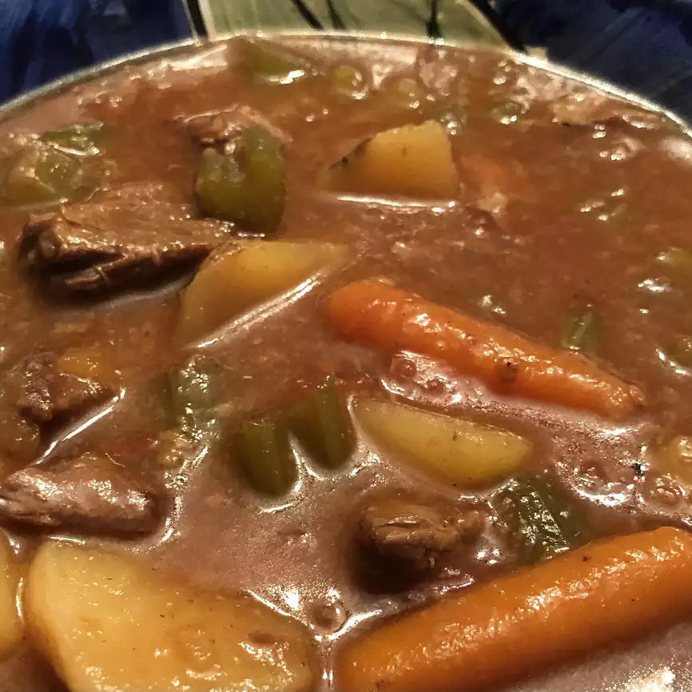

Carrot Stew

Served with fresh bread and a salad, this hearty beef stew is a family favorite. It can be made fresh, browning the meat then tossing all the ingredients together in the slow cooker, or it can be prepared ahead of time for freezing and quick assembly for a quick crock pot meal when you need it! I like to make fresh stew, but double the ingredients and freeze the second portion for a quick dose of comfort food mid-week.
Ingredients:
- Beef
- Stew
- Onion
- Potato
- Carrot
- Throw
- That
- Shit
- IN
- and let
- That Shit
- SIT